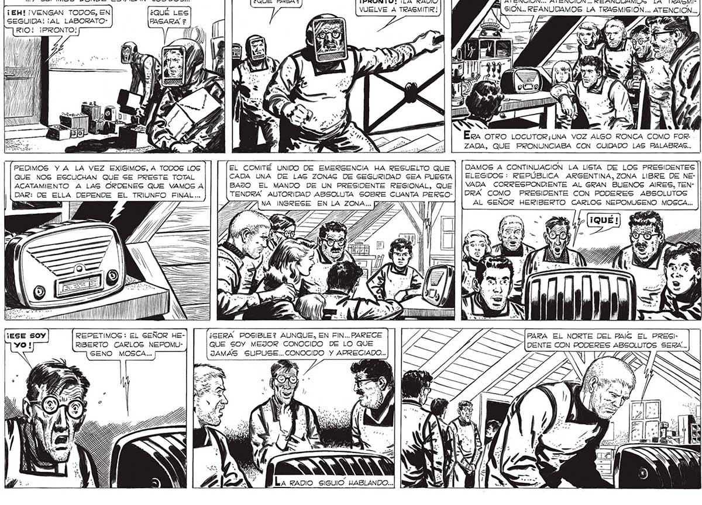
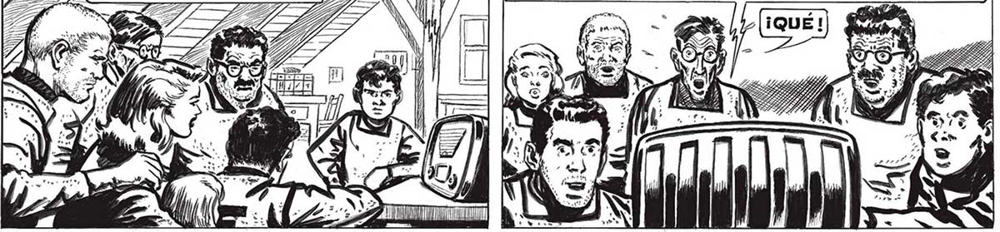

328 ...Y GSUPIMOS DÓNDE ESTABAN LOG DOS... ¡EH! ¡VENGAN TODOS, EN SEGUIDA! ¡AL LABORATORIO! ¡PRONTO! al mM FS <G PEDIMOS VA LA VEZ EXIGIMOS, A TODOS LOS QUE NOG ESCUCHAN QUE SE PRESTE TOTAL ACATAMIENTO A LAS ORDENES QUE VAMOS A DAR: DE ELLA DEPENDE EL TRIUNFO FINAL... REPETIMOS : EL SEÑOR HERIBERTO CARLOS NEPOMUGENO MOSCA... 4Í ATENCION... ATENCION... REANUDAMOS LA TRASMI-| | SIÓN... REANUDAMOS LA TRASMISION... ATEN , á f PS Í — IX > L Y) ML y ¡PRONTO! ¡LA RADIO VUELVE A TRASMITIR | ¿QUE PASA? 5 | mn | QS Mi 7 al A Era OTRO LOCUTOR¿UNA VOZ ALGO RONCA COMO FOR- . ZADA, QUE PRONUNCIABA CON CUIDADO LAS PALABRAS... DAMOS A CONTINUACION LA LISTA DE LOS PRESIDENTES ELEGIDOS : REPÚBLICA ARGENTINA, ZONA LIBRE DE NEVADA CORRESPONDIENTE AL GRAN BUENOS AIRES, TENDRÁ COMO PRESIDENTE CON PODERES ABSOLUTOS AL SEÑOR HERIBERTO CARLOS NEPOMUSENO MOSCA... EL COMITÉ UNIDO DE EMERGENCIA HA RESUELTO QUE CADA UNA DE LAS ZONAG DE SEGURIDAD SEA PUESTA BAJO EL MANDO DE UN PRESIDENTE REGIONAL, QUE TENDRÁ AUTORIDAD ABSOLUTA SOBRE CUANTA PERSOINGRESE EN LA ZONA... 27 7 = ES EN Y pr PARA EL NORTE DEL PAIS EL PRESI¿GERA POSIBLE? AUNQUE, EN FIN... PARECE QUE SOY MEJOR CONOCIDO DE LO QUE DENTE CON PODERES ABSOLUTOS SERA... JAMÁS SUPUSE... CONOCIDO Y APRECIADO... Ñ S eb

